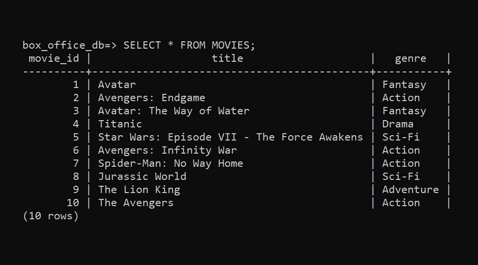

Contacts Book
Python App
This is a terminal application built for a Coder Academy project using Python. When the application is launched the user is met with a main menu where they can choose their options. The menu clearly displays each option and its corresponding number. To navigate the menu, simply enter a number between 1-6 to go to the desired feature. The user has the following options for their contacts: View, search, add, edit and delete.
Take a look at my Github to see more!
Project's Github
API Web Server
PostgreSQL and Flask
This is an API web server built for a Coder Academy project using PostgreSQL and Flask. This API is designed to provide the user with the top grossing movies of all time and provides plenty of data to use. In the PSQL database there are four tables for movies, lead actor, director and box office gross information. The Flask server has the ability to Create, Read, Update and Delete from any table and provides an array of searching options for ease of use.
Take a look at my Github to see more!
Project's Github  Back to top